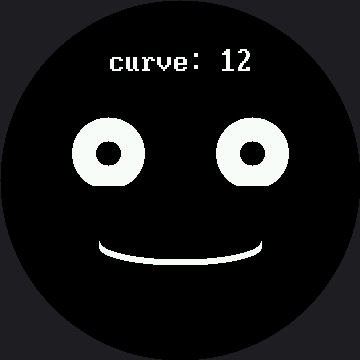

Live Face Parameters¶
Every expression so far has used fixed numbers baked into the code. This lab makes one number live: button A widens the smile, button B narrows it and then bends it into a frown, and the face redraws instantly so you can watch a single parameter bend the whole mood in real time.
It is the fastest way to develop an intuition for how faces actually work, and it turns a programming exercise into an experiment you can run on people.
Turn the knob and watch me change my mind
 One number controls the curve of my mouth. Push it up and I'm delighted; push it down and I'm disappointed. Somewhere in between is a value where nobody can tell — and finding that number is a real discovery.
One number controls the curve of my mouth. Push it up and I'm delighted; push it down and I'm disappointed. Somewhere in between is a value where nobody can tell — and finding that number is a real discovery.
One Number, Two Mouths¶
The curve value does double duty. Positive means smile, negative means frown, and the sign picks the quadrant mask:
# a positive curve smiles (BOTTOM_HALF), a negative curve frowns (TOP_HALF)
if mouth_curve >= 0:
mask = BOTTOM_HALF
radius_y = mouth_curve + 6
else:
mask = TOP_HALF
radius_y = -mouth_curve + 6
mouth_curve |
Mask | What you see |
|---|---|---|
| +48 | BOTTOM_HALF |
A deep, delighted grin |
| +12 | BOTTOM_HALF |
A gentle, pleasant smile — the starting value |
| 0 | BOTTOM_HALF |
A nearly flat line — neutral |
| −36 | TOP_HALF |
A deep frown |
"Instantly" Is Doing Real Work¶
The eyes never change, so they are drawn once and never touched again. Only the mouth's box and the readout strip are erased and rebuilt on a press. Redraw the whole screen instead — 129,600 pixels, 259,200 bytes down the SPI wire on this panel — and the response stops feeling instant. It starts feeling like a page loading.
# The box the mouth can never escape: widest radius, deepest curve in
# either direction, plus a margin. Work this out from the numbers above
# rather than guessing, or you will be chasing leftovers all afternoon.
MOUTH_BOX_X = HALF_WIDTH - MOUTH_WIDTH - 6
MOUTH_BOX_Y = MOUTH_Y - MOUTH_CURVE_MAX - STROKE - 6
MOUTH_BOX_W = (MOUTH_WIDTH + 6) * 2
MOUTH_BOX_H = (MOUTH_CURVE_MAX + STROKE + 6) * 2
Read those four lines carefully. Every one of them is derived from the limits the program already declares, rather than typed in as a guess. That is how you size an erase box correctly the first time.
Sample Program Code¶
# Lab 22: Face Parameters -- Live Tuning (excerpt)
MOUTH_CURVE_MIN = -36 # -24
MOUTH_CURVE_MAX = 48 # 32
MOUTH_CURVE_STEP = 6 # 4
def draw_mouth(mouth_curve):
display.fill_rect(MOUTH_BOX_X, MOUTH_BOX_Y,
MOUTH_BOX_W, MOUTH_BOX_H, BLACK)
if mouth_curve >= 0:
mask = BOTTOM_HALF
radius_y = mouth_curve + 6
else:
mask = TOP_HALF
radius_y = -mouth_curve + 6
for offset in range(STROKE):
shapes.ellipse(display, HALF_WIDTH, MOUTH_Y - offset,
MOUTH_WIDTH, radius_y, WHITE, NO_FILL, mask)
def draw_readout(mouth_curve):
text = "curve: " + str(mouth_curve)
display.fill_rect(0, LABEL_Y, config.WIDTH, FONT.HEIGHT, BLACK)
x = HALF_WIDTH - (len(text) * FONT.WIDTH) // 2
display.text(FONT, text, x, LABEL_Y, WHITE, BLACK)
def update(mouth_curve):
draw_mouth(mouth_curve)
draw_readout(mouth_curve)
display.fill(BLACK)
draw_eyes()
mouth_curve = 12 # 8 on the smartwatch kit
update(mouth_curve)
while True:
if pressed(button_a):
mouth_curve = min(MOUTH_CURVE_MAX, mouth_curve + MOUTH_CURVE_STEP)
update(mouth_curve)
wait_for_release(button_a)
if pressed(button_b):
mouth_curve = max(MOUTH_CURVE_MIN, mouth_curve - MOUTH_CURVE_STEP)
update(mouth_curve)
wait_for_release(button_b)
sleep(0.01)
The full program is 22-face-parameters.py in the kit.
Here's the starting state, at curve: 12:

The Readout Is the Point¶
That curve: 12 on screen is not decoration. It means every discovery you make is a number
you can write down, hand to somebody else, and put straight into the
emotion table.
Look again at draw_readout()'s erase line: display.fill_rect(0, LABEL_Y, config.WIDTH,
FONT.HEIGHT, BLACK). FONT.HEIGHT is read off the font module itself, not hardcoded — so it
erases 32 rows, the true height of BIG_FONT, not the 16 you'd get by copying the smartwatch
kit's number. Get that height wrong and the bottom half of every changing digit survives the
erase, and the readout turns into a smear.
Notice also that LABEL_Y itself is 45 here — the plain 1.5×-scaled value from the smartwatch
kit's 30, not the 32 used in the demo reel and the standalone main.py. Those two labs move their
label up to protect Afraid's raised eyebrow; this lab never calls draw_eyebrows() at all, so
there is no eyebrow to clip, and the naive scale is perfectly safe here.
You Are Doing Real Human-Factors Research
 Find the exact curve where the face stops reading as happy and starts reading as neutral. Then find where neutral becomes sad. Those two numbers are a genuine finding about how people read faces — and you measured them yourself.
Find the exact curve where the face stops reading as happy and starts reading as neutral. Then find where neutral becomes sad. Those two numbers are a genuine finding about how people read faces — and you measured them yourself.
Things to Try¶
- Find the two thresholds described in the tip above, then ask three other people to find them too. Do you all agree? Where you disagree is the interesting part.
- Shrink
MOUTH_BOX_Hby thirty and run to the extremes. The old mouth's ends survive the erase and pile up. The box has to be big enough for the largest thing that can appear in it, not the current one. - Change
FONT.HEIGHTindraw_readout()to a hardcoded 16 and hold a button down. The bottom half of every digit stays behind and the readout turns into a smear — the exact bug this kit's port had to fix everywhere: the coordinates scaled by 1.5, the glyphs did not. - Make a second parameter live. Borrow the
draw_eyebrows()pattern from the demo reel, add it to the setup, and put the eyebrow lift on a third button — or let holding button B change what button A adjusts instead. Two knobs is a much richer instrument than one.
References¶
- The Expression Menu — where those fixed numbers came from
- The Emotion Table — where the numbers you discover here belong
- Design Your Own Emotion — the capstone, where tuning becomes designing
- Live Face Parameters on the 1.2" kit — the same lab at 240×240, tuning from −24 to 32 instead of −36 to 48